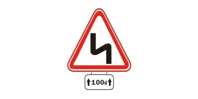
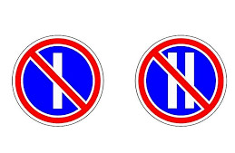
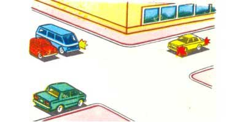
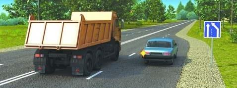
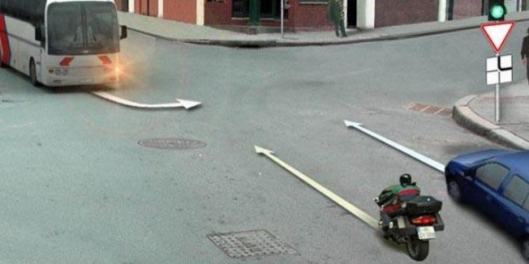
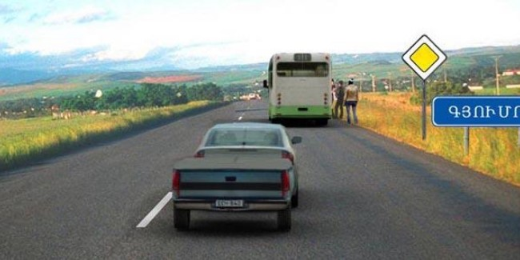
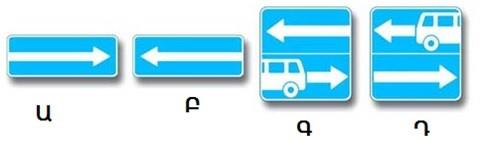
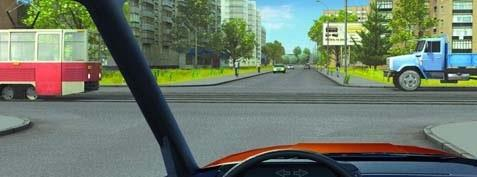
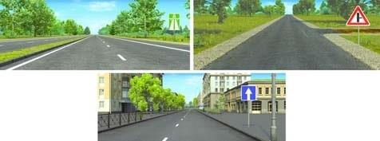
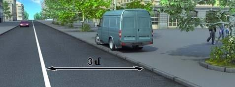

Թեստ 12
30:00
1. «Ճանապարհային երթեւեկության անվտանգության ապահովման մասին» ՀՀ օրենքի համաձայն՝ «B» եւ «C» կարգերի տրանսպորտային միջոցներ վարելու իրավունքի վկայական կարող է տրվել՝
2. ՙՃանապարհային երթևեկության անվտանգության ապահովման մասին՚ ՀՀ օրենքի համաձայն բաժանարար գոտի է համարվում
3. Տրանսպորտային միջոցների շահագործումն արգելվում է, եթե`
4. Տրանսպորտային միջոցների շահագործումն արգելվում է, եթե
5. Հետադարձն արգելվում է, եթե ճանապարհի թեկուզ և մեկ ուղղությամբ տեսանելիությունը պակաս է`
6. Ի՞նչ է նշանակում նշանի տակ տեղադրված ցուցանակը:

7. Տվյալ ճանապարհային նշանների ազդեցությունը տարածվում է`

8. Կարմիր ավտոմոբիլը խաչմերուկը կանցնի`

9. Ո՞ր տրանսպորտային միջոցի վարորդը պետք է զիջի ճանապարհը

10. Մերձակա տարածքից ճանապարհ դուրս գալիս՝ վարորդը պետք է
11. Ո՞ր տրանսպորտային միջոցը պետք է զիջի ճանապարհը:

12. Ավտոբուսի վարորդը կատարել է կանգառ ուղևորներ նստեցնելու նպատակով: Թեթև մարդատար ավտոմոբիլը երթևեկում է 70 կմ/ժ արագությամբ: Ո՞ր տրանսպորտային միջոցի վարորդն է խախտում ճանապարհային երթևեկության կանոնների պահանջները:

13. Կահավորված թափքում մարդկանց փոխադրելու դեպքում բեռնատար ավտոմոբիլի վարորդը պարտավոր է երթևեկել ոչ ավելի քան`
14. Նշաններից ո՞րն է արգելում հետադարձը

15. Պարտավոր ենք զիջել ճանապարհը

16. Ո՞ր նկարում է պատկերված գլխավոր ճանապարհ

17. Բեռնատարի վարորդը խախտել է արդյո՞ք կանգառ կատարելու կանոնները

18. Այս նախազգուշացնող նշանը բնակավայրերում, մինչև վտանգավոր հատվածի սկիզբը ի՞նչ հեռավորության վրա է տեղադրվում:

19. Հետադարձն այս վայրում